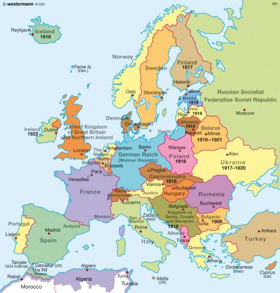

Pirmā pasaules kara beigas - 1918. gada 11. novembrī tika parakstīts pamieris, kas būtībā noslēdza Pirmo pasaules karu. Tas notika pēc Centrālajām lielvarām (Vācija, Austroungārija, Osmaņu impērija) sabrukuma.
Krievu revolūcija un pilsoņu karš - Krievu revolūcija sākās 1917. gadā, un 1918. gadā Krievijā notika intensīvs pilsoņu karš starp bolševikiem (sarkanie) un dažādām pretējo spēku grupām (baltsardzējiem). Pilsoņu karš turpinājās līdz 1922. gadam.
Spānijas gripa - 1918. gadā sākās Spānijas gripas pandēmija, kas kļuva par vienu no letālākajām pandēmijām cilvēces vēsturē, nogalinot aptuveni 50 miljonus cilvēku visā pasaulē. Gripas izplatīšanos veicināja karavīru pārvietošana Pirmajā pasaules karā.
Jaunu valstu izveidošanās - Pirmā pasaules kara beigas un impēriju sabrukums noveda pie jaunu valstu veidošanās, īpaši Eiropā un Tuvajos Austrumos. Piemēram, 1918. gadā Somija pasludināja neatkarību no Krievijas, un tika izveidota Čehoslovākija.
ASV iesaistīšanās Pirmajā pasaules karā - ASV piedalījās karā no 1917. gada, un 1918. gadā tās spēki bija izšķiroši pēdējās uzvarās, kas noveda pie Vācijas sakāves.
Pamiers un Versaļas miera līgums - Lai gan pamieris tika parakstīts 1918. gada novembrī, oficiālais Versaļas miera līgums, kas noteica nosacījumus Vācijai, tika parakstīts tikai 1919. gadā.
Pirmajā pasaules karā kopumā tika zaudētas aptuveni 16 miljoni dzīvību, tostarp apmēram 10 miljoni karavīru un 7 miljoni civiliedzīvotāju.
Papildus tam, miljoniem cilvēku tika ievainoti, un daudziem bija ilgstošas sekas no fiziskajiem un psiholoģiskajiem ievainojumiem. Karš radīja arī milzīgas materiālās un ekonomiskās postījumus visā Eiropā.
 Vairāk Informācijas